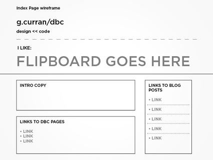

The Plan
I'm looking forward to manipulating page elements with Javascript, but I'm not there yet. Since the index page doesn't really have much to do at this point, given the scope of my DBC pages is so simple, I'd like to include a flipboard on the page as a fun way to communicate some stuff about myself. This can also serve as a project to iterate on as I learn more. I'll build a mock version of it for this page, and then revise when I've got the chops.
The index page will of course have to have the site title, a brief text intro, links to my DBC blog pages, as well as links to Unit 1 assignment result pages.
The Wireframe

Click here for the fullsize wireframe.